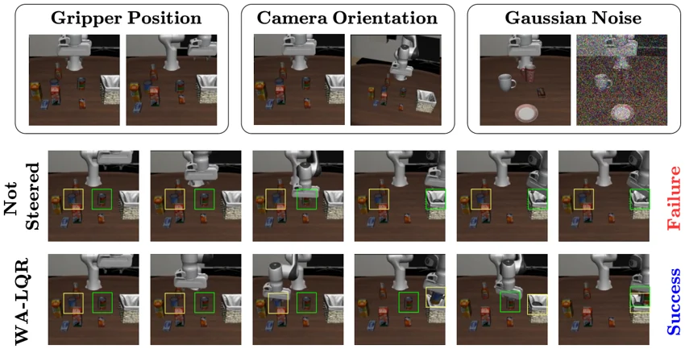

arXiv 2026


Steering Robustness into World Action Models via Mechanistic Interpretability and Optimal Control
* Equal contribution
arXiv preprint · July 2026
We used the internal activations of world action models to study why changes in the camera view or gripper position can disrupt robot manipulation. WA-LQR uses feedback during inference to improve robustness in two of the models we tested.
@article{hong2026steering,
title={Steering Robustness into World Action Models via Mechanistic Interpretability and Optimal Control},
author={Hong, Jihoon and Skifstad, Julian and Dai, Qiyue and Chan, Alice and Chou, Glen},
journal={arXiv preprint arXiv:2607.14943},
year={2026},
doi={10.48550/arXiv.2607.14943}
}